I was doing challenge exercise from Oalabs to retrieve the C2 config from an unpacked Emotet sample, as a way to practice utilising emulation. I decided to a write up on my process of doing this, as such this is not a full analysis/ report of the sample.
I am pretty sure the idea was to emulate the config de-obfuscation routine, but I also tried to utilise emulation to resolve the API hashing in the sample and had some interesting results.
SHA256: C688E079A16B3345C83A285AC2AE8DD48680298085421C225680F26CEAE73EB7
First Seen On VirusTotal: 2022-05-13
Family: Emotet
Since the goal was to extract the C2 config, this implies the sample must include some kind of networking functionality.
My approach to find the config data was to look at all the code surrounding network API calls, then I could trace the arguments provided to these and hopefully find the configuration info.
Looking at the imports for this sample it did not contain a single import. This is a clear sign that this sample utilises API hashing, or at the very least walks the Export table of each module it is retrieving functions from.
(For those unfamiliar, a module loaded into a processes memory space will expose the functions it exports through an export table. Although this is typically intended to be used by the Windows loader or APIs such as GetProcAddress, it can be manually parsed, as a stealthy technique to resolve imports)So to find the API hashing function I decided to hunt for references to TEB , as this is required to access the PEB, which is often used to find the base address of modules that have been loaded in processes memory space. As such I used the script below to scan all the assembly instructions to see if it contained 'gs' (If this was a 32 bit sample we would use 'fs').
(The gs/fs segment register of all threads will contain a pointer to the TEB)Another option would be to do this dynamically (which would likely be quicker as well), by setting breakpoints on a variety of networking APIs and running the sample, but I wanted to try statically reversing the API resolution function.
import idautils
def operand_is_gs(op1, op2):
if ("gs" in op1 or "GS" in op1) or ("gs" in op2 or "GS" in op2):
return True
return False
def find_gs():
for func_ea in idautils.Functions():
for head in idautils.Heads(func_ea, idc.get_func_attr(func_ea, idc.FUNCATTR_END)):
if not idc.is_code(idc.get_full_flags(head)):
continue
first_op = print_operand(head, 0)
second_op = print_operand(head, 1)
if first_op == 0:
continue
if operand_is_gs(first_op, second_op) == True:
print(f"{hex(head)}: {GetDisasm(head)}")
find_gs()
Which showed one reference
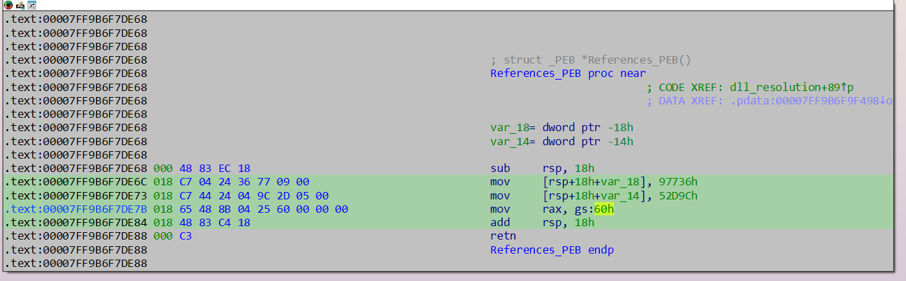
Back tracing this function, I got to this function - Looking at the xrefs it is called 108 times, with a variety of arguments passed to it that looked like hash values.
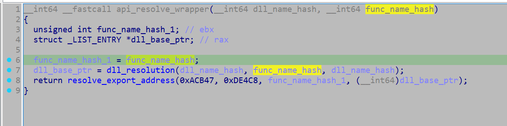
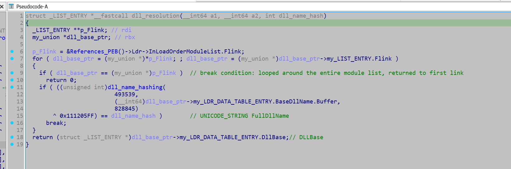
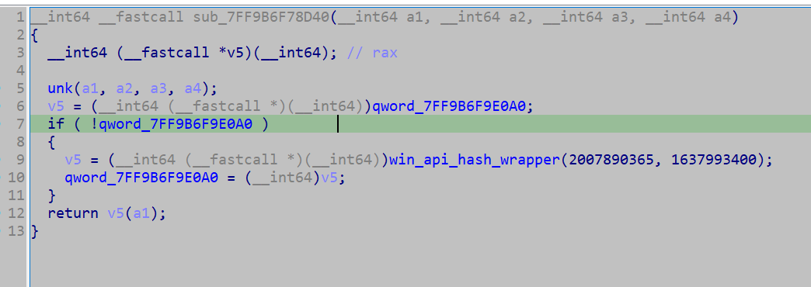
Looking into the hashing algorithm used for the dll names, it did not look too complex, and as such almost certainly a custom algorithm. (A standard hashing algorithm will typically look much more complex, such that it can be properly cryptographically secure).
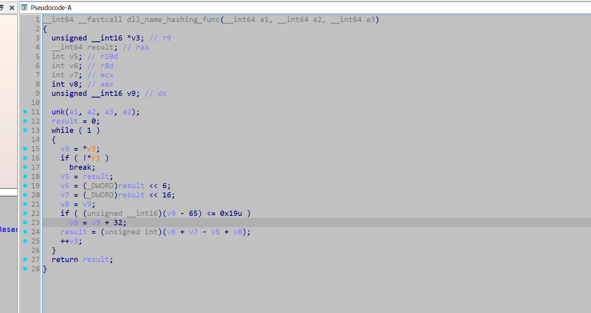
The hashing function for resolving the Win API function names is a separate custom hashing function (to the one used for the dll names).
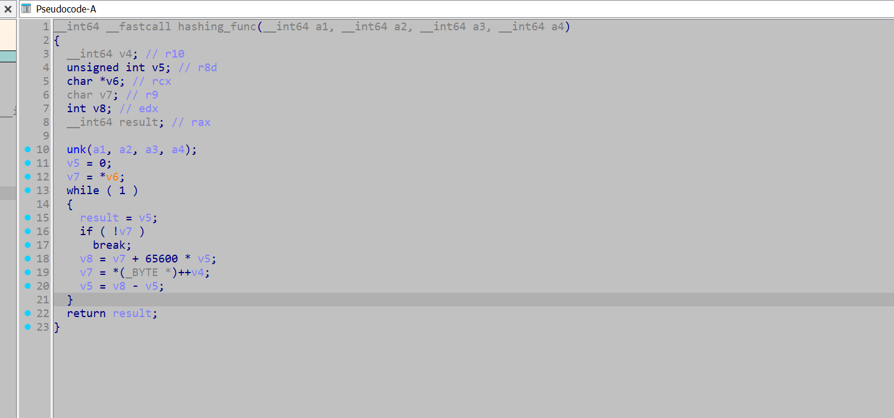
But first I need to retrieve all hashes provided to the function, which I used the following script to acquire.
import idautils
def get_paramter(all_dll_api_pairs):
for xref in idautils.XrefsTo(0x00007FF9B6F73D70): # api_resolve_wrapper_func
xref = xref.frm
dict_key = str(hex(xref))
dll_api_pair_dict = {'address' : dict_key}
counter = 25
prev_instruct = idaapi.prev_head(xref, 25)
while counter >= 0: # the instruction moving the hash value into the register, is not a consistent offset from the call the api hash wrapper, so have to loop back for a while
counter -= 1
mnemonic = print_insn_mnem(prev_instruct)
if mnemonic != 'mov':
prev_instruct = idaapi.prev_head(prev_instruct, 25)
continue
first_operand = print_operand(prev_instruct, 0)
if first_operand != "edx" and first_operand != "rdx" and first_operand != "ecx" and first_operand != "rcx":
prev_instruct = idaapi.prev_head(prev_instruct, 25)
continue
if first_operand == 'ecx' or first_operand == 'rcx':
instruction = idaapi.insn_t()
idaapi.decode_insn(instruction , prev_instruct)
dll_name_hash = instruction.Op2.value
if 'dll_hash' not in dll_api_pair_dict:
dll_api_pair_dict['dll_hash'] = (dll_name_hash & 0xffffffff)
prev_instruct = idaapi.prev_head(prev_instruct, 25)
if first_operand == 'rdx' or first_operand == 'edx':
instruction = idaapi.insn_t()
idaapi.decode_insn(instruction , prev_instruct)
win_api_hash = instruction.Op2.value
if 'win_api_hash' not in dll_api_pair_dict:
dll_api_pair_dict['win_api_hash'] = (win_api_hash & 0xffffffff)
prev_instruct = idaapi.prev_head(prev_instruct, 25)
if len(dll_api_pair_dict) == 3:
all_dll_api_pairs.append(dll_api_pair_dict)
break
continue
all_dll_api_pairs = []
get_paramter(all_dll_api_pairs)
print(all_dll_api_pairs)
With this I now have a list of all the hashes, and the location they were called from.
The standard approach to resolve these hashes would either be to use HashDB, or re-implement the hashing function and brute force them with them with a Win API wordlist.
But I wanted to try something different - I wanted to emulate the entire wrapper function (including the DLL table walking etc, and extract the dll names and win API names), through dumpulator.
This would mean I wouldn't need to get a wordlist to brute force it, I could just plug in the hashes I acquired and that should be enough, however spoilers - It only sort of worked.
So to do this I need to do some additional reverse engineering, to figure out where I want to hook, and what register or memory location I want to read. As such I marked up this function a bit more.
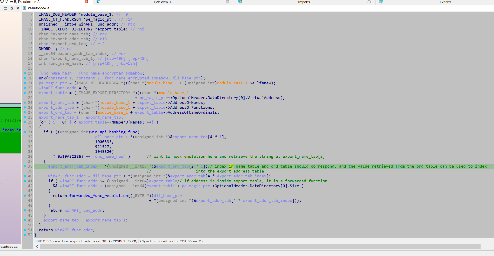
After marking up the decompiled output, I want to correlate it with the assembly code and see if I can easily retrieve the index into the name table.
The disassembled code shows a loop, in which an export name table entry is passed into the function win_api_hashing_func, and if the calculated hash matches the hash provided by the argument, it will exit the loop.
To use emulation to resolve this, I have to do extract the export table entry passed into win_api_hashing_func each loop, and hopefully when it exits, the most recent value we have extracted will be the API of interest.
The easiest way for this I found was reading the contents of the rcx register at the address 0x07FF9B6F791C4 in win_api_hashing_func as it is directly reading from the export name table at the address.
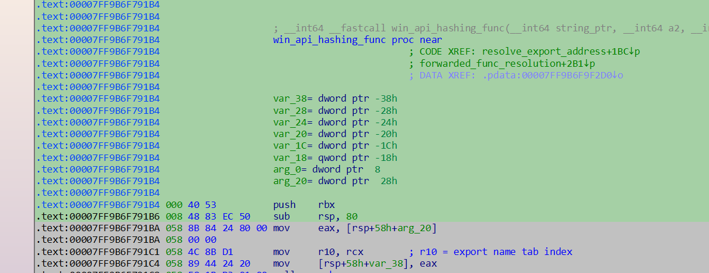
This can be done by hooking dumpulator through its unicorn underpinning, and retrieving a pointer to the string each loop. Once the emulation instance finishes and the retrieved value should be the most recent export name table entry, hopefully pointing to the API name string. (Not sure if you are meant to do this as the unicorn instance is labelled as a private attribute, but it worked).
To do this all that is needed is a MiniDump of the process, at whatever process execution state we want it to be in. Then the sample should be rebased in IDA such that the Virtual Addresses match up, allowing the use of the Virtual addresses in IDA to help set up the emulation instance. From here the Dumpulator instance can allocate memory, write to memory and set up register values.
For this function the hash arguments are provided through the rcx and rdx registers, so we just have to initalise these registers with the hashes in our dumpulator instance, and then plug in the address of the start of the function.
from dumpulator import *
from unicorn import *
from unicorn.x86_const import *
import struct
hashed_api_int = [{'address': '0x7ff9b6f7118a', 'win_api_hash': 2496187760, 'dll_hash': 2657936269}, {'address': '0x7ff9b6f713a8', 'dll_hash': 2657936269, 'win_api_hash': 326862382}] #... Cut down for brevity
resolved_win_apis = []
def hook_code(uc, address, size, user_data):
dp = user_data[0]
resolved_dict = user_data[1]
if address == 0x07FF9B6F791C4: # Instruction after rcx gets loaded with pointer from entry in export name table
user_data[2][0] = dp.regs.rcx
if address == 0x07FF9B6F74A66:
out = dp.read(dp.regs.rbx + 48 + 24 + 8, 8)
# + 48 = DllBase, + 24 = FullDLLName, + 8 = wchar* (A unicode string struct will have a wide_char* at 8 bytes from its base)
out = struct.unpack("Q", out)
out = out[0]
dll_name = dp.read_str(out, encoding="utf-16")
resolved_dict['dll'] = dll_name
def extract_name(dll_hash, func_hash, xref_address):
resolved_dict = {}
export_name_tab_ptr = [None]
dp = Dumpulator(r"C:\Users\Kevin\Desktop\Emotet\emotet.dmp", quiet=True)
dp._uc.hook_add(UC_HOOK_CODE, hook_code, user_data = [dp, resolved_dict, export_name_tab_ptr])
dp.regs.rcx = dll_hash
dp.regs.rdx = func_hash
start_VA = 0x07FF9B6F73D70
end_VA = 0x07FF9B6F8E22B
print("starting")
dp.start(start_VA, end=end_VA)
print("finished")
print(export_name_tab_ptr)
func_name = dp.read_str(export_name_tab_ptr[0], encoding='utf-8')
resolved_dict['win_api'] = func_name
resolved_dict['xref_address'] = xref_address
resolved_win_apis.append(resolved_dict)
def main():
for dict in hashed_api_int:
func_hash = dict['win_api_hash']
dll_hash = dict['dll_hash']
xref_addr = dict['address']
try:
extract_name(dll_hash, func_hash, xref_addr)
except:
pass
print(resolved_win_apis)
main()
An issue with this approach is that if the emulation instance can't actually successfully resolve the hash, then we also cannot retrieve it. This is what occurred here as it only extracted the Win APIs from kernel32.dll and ntdll.dl, however I counted around 5 unique dll name hashes provided to the hashing function.
(Once I extracted the modules later, and looking at the MiniDump contents, these modules were not loaded in the process in the MiniDump - The sample would likely make a call to LoadLibrary to load these modules before attempting to retrieve their functions. - This fact likely makes attempting to resolve Win API hashing in this manner unreliable. Taking a MiniDump after the calls to LoadLibrary might allow this technique to work for all APIs.)results from the emulation routine (I also extracted the dll name, which is technically unnecessary):
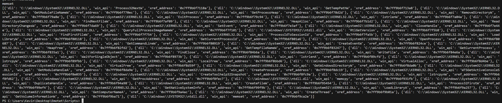
So with this I decided to use HashDB to resolve the functions.
In the API resolution function I can see the hashed value of the API will be XOR'ed with 0x19A3CCB86, thus using a key to help conceal the hash value. However that is easily thwarted by setting it as the XOR key in the HashDB IDA plugin
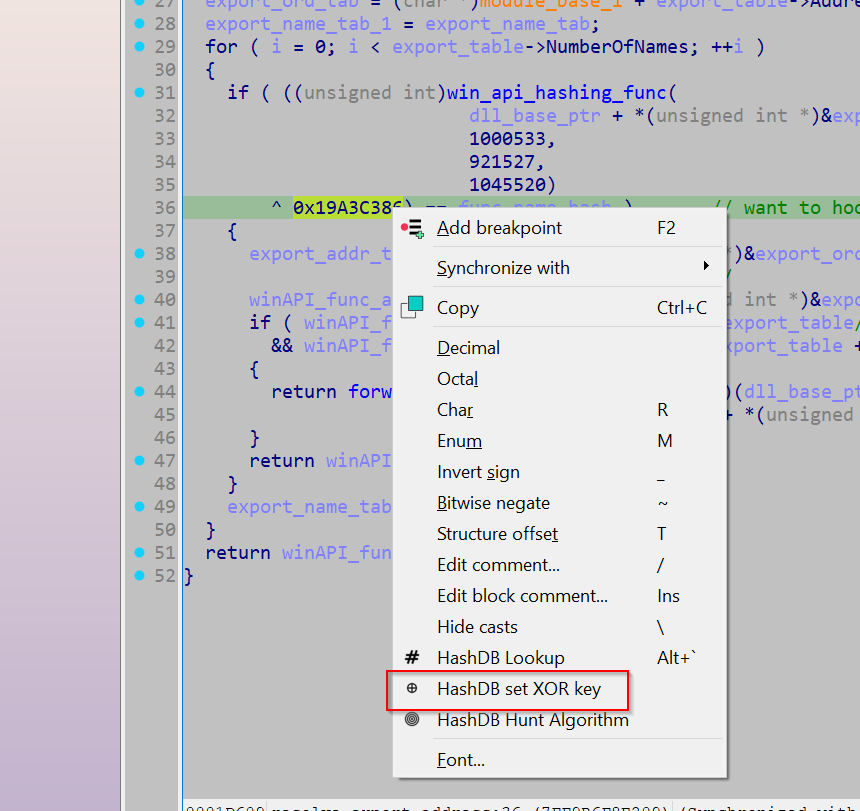
This allows us to do a hunt algorithm with any of the hashes we acquired earlier. If the hashing algorithm is in HashDB's database as well as the string that the hash resolves to, HashDB hunt algorithm will return the hashing algorithm in use.
If the hashing algorithm was not in HashDB's database, we could write it ourselves and upload it to them, which would give us access to their large string database. However the algorithm hunt returned an algorithm named 'emotet', so we are now ready to resolve all the APIs.
Their API outlines the following format when retrieving strings from an algorithm using an xor key.
https://hashdb.openanalysis.net/hash/{algorithm}/{hash}/{xor}So I used the following script to resolve all the hashes.
import requests
import time
hashed_api_int = [{'address': '0x7ff9b6f7118a', 'win_api_hash': 2496187760, 'dll_hash': 2657936269}, {'address': '0x7ff9b6f713a8', 'dll_hash': 2657936269, 'win_api_hash': 326862382}] # ... Cutdown for brevity
resolved_apis = []
unresolved_list = []
unresolved_count = 0
for item in hashed_api_int:
hash_val = item['win_api_hash']
address = item['address']
url_hashdb = f'https://hashdb.openanalysis.net/hash/emotet/{hash_val}/430162822'
response = requests.get(url_hashdb)
if response.status_code == 429:
time.sleep(60)
else:
data = response.json()
try:
api = data["hashes"]
api = api[0]
api = api['string']
api = api['string']
print(api)
resolved_apis.append((address, api))
except:
print(f'unresolved: {hash_val}')
unresolved_count += 1
continue
print(unresolved_count)
print(resolved_apis)
After resolving the Win APIs, I investigated what was actually done with the retrieved function pointer. It appears all the Win API pointers will get written to a global variable (.data section), however this appears to be just be storing the pointer in a cache, as there is no other xrefs to these addresses (although it is possible they indexed into from a base address, in which they wouldn't show up as cross references)
For each unique hash set that is passed to win_api_hashing_func, there is a specific wrapper function, which subsequently calls the resolved API. So when marking this up, it is important to actually label the wrapper function rather than the global variable.
Thus I used the following script to rename all the functions.
resolved_apis = [('0x7ff9b6f7118a', 'Process32NextW'), ('0x7ff9b6f713a8', 'GetTempPathW')] # ... cutdown for brevity
apis_addr_int = [(int(pair[0], 16), pair[1]) for pair in resolved_apis] # Converting addresses from strings to int values
def rename_funcs(addr_name: list[tuple]):
for pair in addr_name:
address, name = pair
func = idaapi.get_func(address)
func_start = func.start_ea
set_name(func_start, name + "_Wrapper")
address = next_head(address)
instruction = print_insn_mnem(address)
while instruction != 'jmp' and instruction != 'call': # it either called or jumped to the API
address = next_head(address)
instruction = print_insn_mnem(address)
print(hex(address))
set_cmt(address, name, 0)
def main():
rename_funcs(apis_addr_int)
main()
With the APIs resolved, I went back to my original strategy of looking for networking APIs in the hope that they reference the configuration data. I noted that GetProcAddress got resolved, indicating further runtime API resolution may occur, but since some networking functions did get resolved, I did not think it was prudent to investigate.
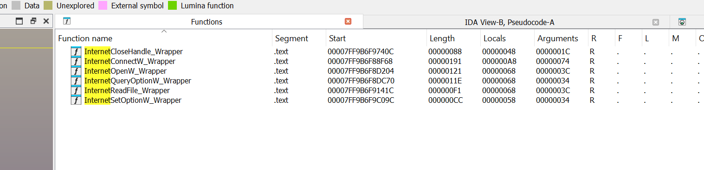
Of these functions, I think InternetConnectW is a good candidate to investigate as the MSDN outlines it takes an argument 'lpszServerName':
"Pointer to a null-terminated string that specifies the host name of an Internet server. Alternately, the string can contain the IP number of the site, in ASCII dotted-decimal format (for example, 11.0.1.45)."
So going to the wrapper function, I can see it receives an argument that is subsequently passed in as argument 'lpszServerName' to InternetConnectW.
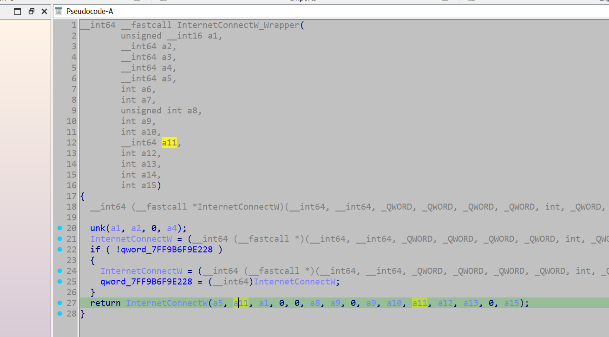
I backtracked this argument back a couple of function calls and identified that the original value originated from a global variable.
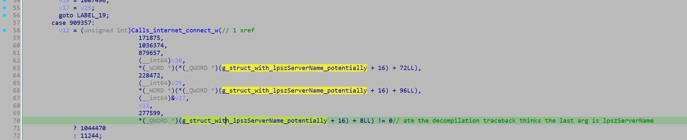
The variable is not initialised at compile time, however, it appears that the variable contains a pointer to a structure containing the C2 data, based on how it is being referenced. To identify when a value is assigned to it, I opened up the x-refs and jumped to the one item where it is written to.
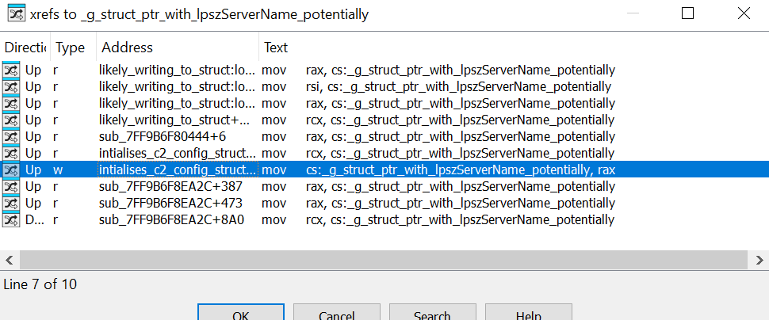
->
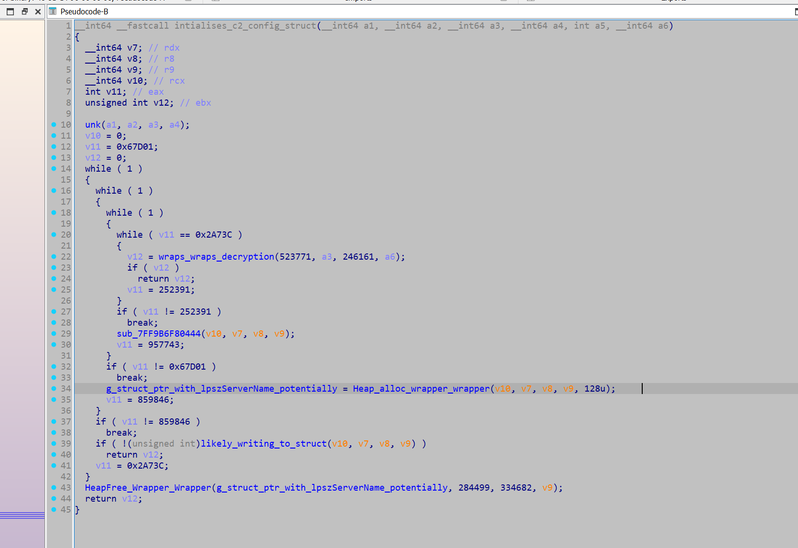
So we can see a heap pointer is initialised and written to our global variable. Then a subsequent function can be seen accessing the global, and writing the output of a sprintf call to the pointer's destination.
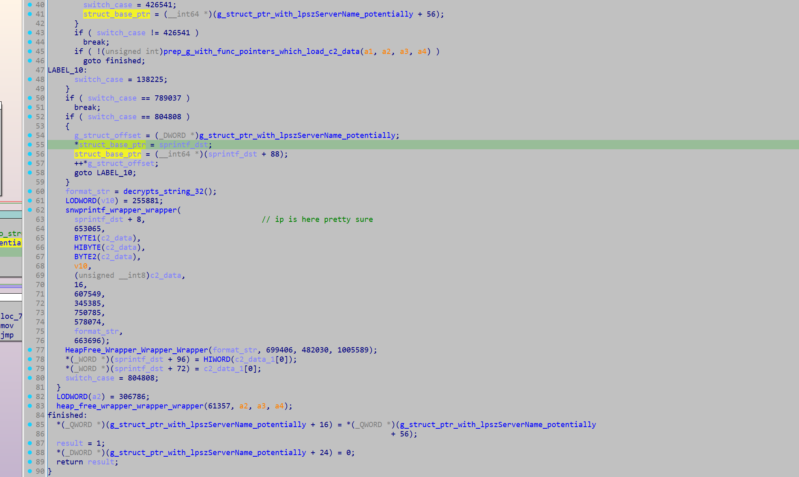
Taking a look at the function that provides the format string, it appears to initialise a stack string for a decryption function decrypt_stuff that was called 32 times, so I decided to locate all calls to this function and emulate them.
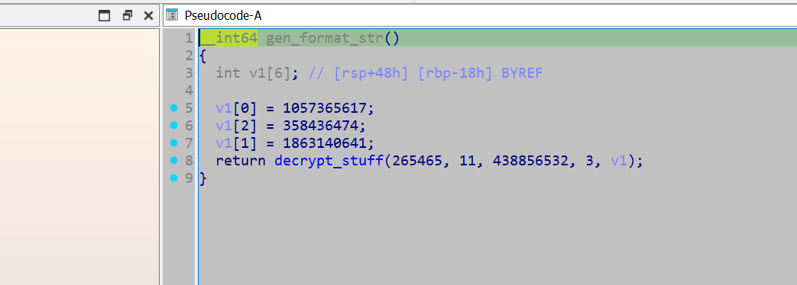
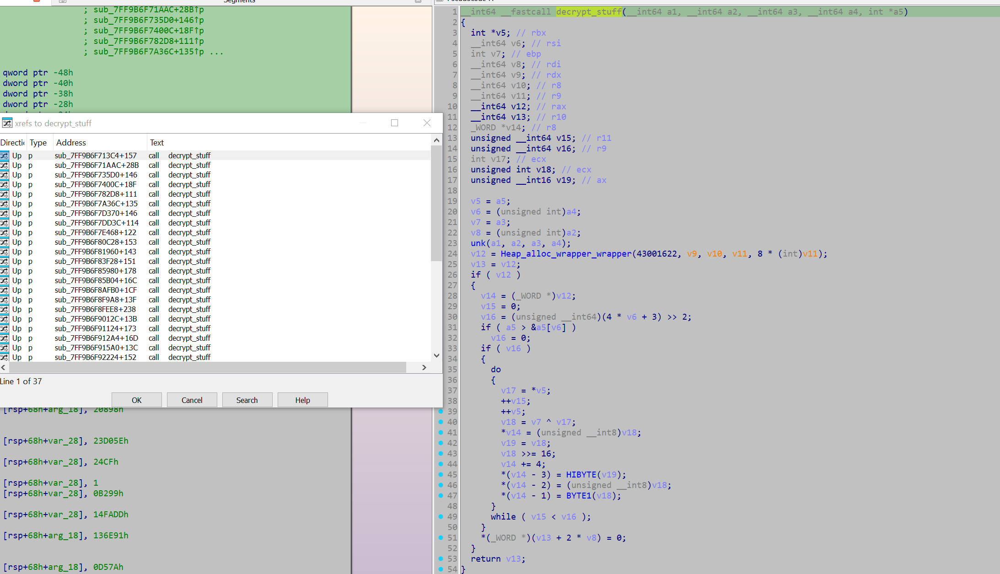
import idautils
decryptor_callers = []
for xref in idautils.XrefsTo(0x07FF9B6F9ADB8):
try:
calling_address = xref.frm
print(hex(calling_address))
func = idaapi.get_func(calling_address)
func_start = func.start_ea
decryptor_callers.append(func_start)
except:
pass
print(decryptor_callers)
from dumpulator import *
callers = [140710493230020, 140710493231788] # ... Cutdown for brevity
string_and_caller = []
def rename_funcs(addr_name: list[tuple]):
name_count = 0
for pair in addr_name:
address, dec_string = pair
func = idaapi.get_func(address)
func_start = func.start_ea
set_name(func_start, 'decrypts_string_' + str(name_count)) # rename the function: decrypts_string_1, decrypts_string_2, etc
name_count += 1
set_cmt(address, dec_string, 0) # comment the decrypted string at the function
def main():
for caller in callers:
try:
dp = Dumpulator(r"C:\Users\Kevin\Desktop\Emotet\emotet.dmp", quiet=True)
start_VA = caller
end_VA = 0x07FF9B6F9AF3C
dp.start(start_VA, end=end_VA)
rax = dp.regs.rax
dec_string = dp.read_str(rax, encoding='utf-16')
print(dec_string)
string_and_caller.append((caller, dec_string))
except:
pass
rename_funcs(string_and_caller)
main()
This returned a variety of decrypted strings:
ObjectLength
SOFTWARE\Microsoft\Windows\CurrentVersion\Run
%s%s.dll
WinSta0\Default
RNG
AES
%s\%s
%s\*
SHA256
%s%s.exe
%s\regsvr32.exe "%s\%s" %s
HASH
Microsoft Primitive Provider
bcrypt.dll
ECDH_P256
Cookie: %s=%s
shlwapi.dll
shell32.dll
ECCPUBLICBLOB
Content-Type: multipart/form-data; boundary=%s
wininet.dll
ECDSA_P256
%s\%s%x
wtsapi32.dll
POST
%s\regsvr32.exe "%s" %s
%s\regsvr32.exe "%s\%s"
userenv.dll
%u.%u.%u.%u
crypt32.dll
KeyDataBlob
The string that was returned for the format string was "%u.%u.%u.%u". This is almost certainly a format string for an IP address, which confirms my belief that this struct used for C2 comms gets initialised here. As such, emulating this function should retrieve all the IPs. The script just needs to read the destination buffer pointer when it is passed in as an argument, then read from it after the call to sprintf is complete.
Again, I use Dumpulator and hook the underlying Unicorn instance to do this:
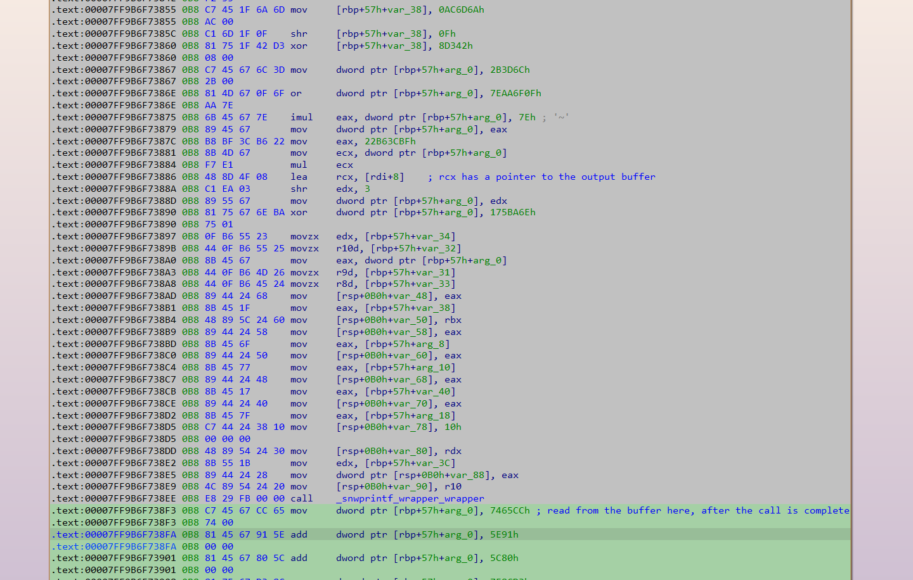
from dumpulator import *
from unicorn import *
from unicorn.x86_const import *
dp = Dumpulator(r"C:\Users\Kevin\Desktop\Emotet\emotet.dmp", quiet=True)
start_VA = 0x07FF9B6F8B190
end_VA = 0x07FF9B6F73BC8
ip_buffer = 0
found_ips = []
def hook_code(uc, address, size, user_data):
dp = user_data[0]
if address == 0x07FF9B6F7388A:
global ip_buffer
ip_buffer = dp.regs.rcx
if address == 0x07FF9B6F738F3:
found_ips.append(dp.read_str(ip_buffer, encoding='utf-16'))
dp._uc.hook_add(UC_HOOK_CODE, hook_code, user_data = [dp])
dp.start(start_VA, end=end_VA)
print(found_ips)
With that, all the IPs were retrieved:
['63[.]142[.]250[.]212', '150[.]95[.]66[.]124', '91[.]207[.]28[.]33', '172[.]104[.]251[.]154', '107[.]182[.]225[.]142', '185[.]157[.]82[.]211', '149[.]56[.]131[.]28', '196[.]218[.]30[.]83', '158[.]69[.]222[.]101', '45[.]176[.]232[.]124', '58[.]227[.]42[.]236', '212[.]24[.]98[.]99', '159[.]65[.]88[.]10', '189[.]126[.]111[.]200', '94[.]23[.]45[.]86', '51[.]254[.]140[.]238', '1[.]234[.]2[.]232', '1[.]234[.]21[.]73', '206[.]189[.]28[.]199', '164[.]68[.]99[.]3', '153[.]126[.]146[.]25', '46[.]55[.]222[.]11', '167[.]99[.]115[.]35', '134[.]122[.]66[.]193', '203[.]114[.]109[.]124', '51[.]91[.]76[.]89', '185[.]4[.]135[.]165', '79[.]137[.]35[.]198', '185[.]8[.]212[.]130', '213[.]241[.]20[.]155', '82[.]165[.]152[.]127', '119[.]193[.]124[.]41', '103[.]75[.]201[.]2', '201[.]94[.]166[.]162', '212[.]237[.]17[.]99', '103[.]70[.]28[.]102', '131[.]100[.]24[.]231', '209[.]250[.]246[.]206', '102[.]222[.]215[.]74', '5[.]9[.]116[.]246', '129[.]232[.]188[.]93', '216[.]158[.]226[.]206', '173[.]212[.]193[.]249', '101[.]50[.]0[.]91', '197[.]242[.]150[.]244', '27[.]54[.]89[.]58', '163[.]44[.]196[.]120', '45[.]118[.]115[.]99', '51[.]91[.]7[.]5', '110[.]232[.]117[.]186', '103[.]43[.]46[.]182', '146[.]59[.]226[.]45', '72[.]15[.]201[.]15', '167[.]172[.]253[.]162', '209[.]126[.]98[.]206', '151[.]106[.]112[.]196', '183[.]111[.]227[.]137', '160[.]16[.]142[.]56', '209[.]97[.]163[.]214', '45[.]235[.]8[.]30', '188[.]44[.]20[.]25', '77[.]81[.]247[.]144', '103[.]132[.]242[.]26']
Although utilising the above code for an automated configuration extractor might prove difficult, I decided to poke around a bit more in this function and see if there was an easy opportunity to develop automation. I found that the IP data was initialised through these functions (initially the function pointers were placed in an array and called in a later function - these functions generated the data from literal/immediate values, rather than storing them as data.)
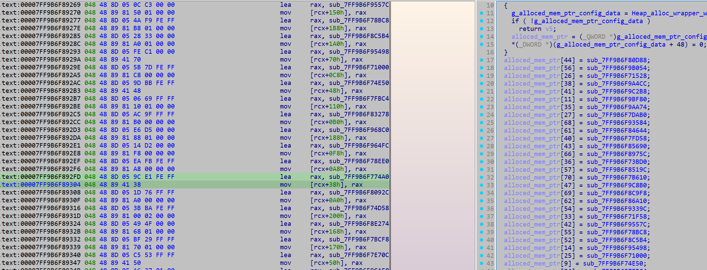
Example of one of the functions:
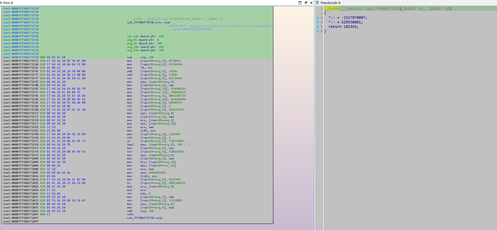
The way this array of function pointers was set up provided a good opportunity to develop regex that could extract these function pointers, which could subsequently be emulated. I decided to emulate the functions with Unicorn instead of Dumpulator, as Unicorn would not require a MiniDump of the process for it to work. As these functions were self-contained (did not make calls out to further functions or read from any global variables), implementing them in Unicorn was not difficult. All that was needed was to initialise the registers rcx and rdx with out buffers.
from unicorn import *
from unicorn.x86_const import *
import struct
from capstone import *
import pefile
import re
import ctypes
ips = []
cap = Cs(CS_ARCH_X86, CS_MODE_64)
ALLOCATION_CHUNK_SIZE = 0x1000
def hook_code(uc, address, size, user_data):
cur_code = uc.mem_read(address, size)
instructions = cap.disasm(cur_code, address)
for instruction in instructions:
#print(f"{hex(instruction.address)}\t{instruction.mnemonic}\t{instruction.op_str}")
if instruction.mnemonic == 'retn' or instruction.mnemonic == 'ret':
out = uc.mem_read(0x10000, 4)
ip = ''
for byte in out:
ip += str(byte)
ip += '.'
ip = ip[:-1]
ips.append(ip)
print(ip)
uc.emu_stop()
if instruction.mnemonic == 'call':
uc.emu_stop()
def emulate_ip_resolver(code, address):
uc = Uc(UC_ARCH_X86, UC_MODE_64)
uc.hook_add(UC_HOOK_CODE, hook_code)
uc.mem_map(0x10000, 0x1000, UC_PROT_ALL)
uc.mem_map(0x20000, 0x1000, UC_PROT_ALL)
uc.reg_write(UC_X86_REG_RCX, 0x10000)
uc.reg_write(UC_X86_REG_RDX, 0x20000)
emulate_func(uc, code, address)
def emulate_func(uc: Uc, code: bytes, code_base_ptr: int):
# Allocating memory for the code, and writing it
allocation_base = code_base_ptr & 0b1111_1111_1111_1111_1111_1111_1111_1111_0000_0000_0000_0000 # alligns the allocation base with 0x1000, was getting unicorn memory errors, not sure if this is required, or if it was the issue.
uc.mem_map(allocation_base, ALLOCATION_CHUNK_SIZE, UC_PROT_ALL)
uc.mem_write(allocation_base, b'\x00' * ALLOCATION_CHUNK_SIZE)
allocation_end = allocation_base + ALLOCATION_CHUNK_SIZE
# Allocates more memory if the allocated memory is not enough for the function
code_len = len(code)
while (code_len + code_base_ptr) > allocation_end:
uc.mem_map(allocation_end, ALLOCATION_CHUNK_SIZE, UC_PROT_ALL)
uc.mem_write(allocation_end, b'\x00' * ALLOCATION_CHUNK_SIZE)
allocation_end += ALLOCATION_CHUNK_SIZE
uc.mem_write(code_base_ptr, code)
# initialising some stack space. Not doing any memory checks with this. Not sure how you even could, and the stack space required by a function should never exceed this
STACK_SPACE = 0x2000
uc.mem_map(STACK_SPACE, ALLOCATION_CHUNK_SIZE, UC_PROT_ALL)
uc.mem_write(STACK_SPACE, b'\x00' * ALLOCATION_CHUNK_SIZE)
uc.reg_write(UC_X86_REG_ESP, STACK_SPACE + ALLOCATION_CHUNK_SIZE // 2) # intialises the stack pointer in the middle of the allocated stack space - Makes it easy to intialise arguements if required.
print("Starting emulating main func")
uc.emu_start(code_base_ptr, code_base_ptr + len(code), timeout = 0, count = 0)
print("Finished Emulating")
def retrieve_func_addrs(pe):
image_base = pe.OPTIONAL_HEADER.ImageBase
for section in pe.sections:
if b'.text' in section.Name:
emotet_content = section.get_data()
text_rva = section.VirtualAddress
find_lea = re.compile(rb'\x48\x8d\x05(.{4})\x48\x89')
matches = find_lea.finditer(emotet_content)
func_addrs = []
for match in matches:
offset = match.group(1)
offset = struct.unpack('<I', offset)[0]
offset = ctypes.c_int(offset).value
VA = match.start()
VA += text_rva + image_base
func_addr = VA + offset + 7
func_addrs.append(func_addr)
return func_addrs
def main():
pe = pefile.PE(r"C:\Users\Kevin\Desktop\Emotet\emo_unpacked_1020000.bin")
image_base = pe.OPTIONAL_HEADER.ImageBase
func_addrs = retrieve_func_addrs(pe)
func_code_list = (pe.get_data(func_addr - image_base, 0x1000) for func_addr in func_addrs)
for func_code in func_code_list:
try:
emulate_ip_resolver(func_code, 0x40_000)
print()
except:
pass
print(ips)
main()
Another option to extract the config data would be to use a debugger and hook the snwprintf calls.
Thank you for reading!